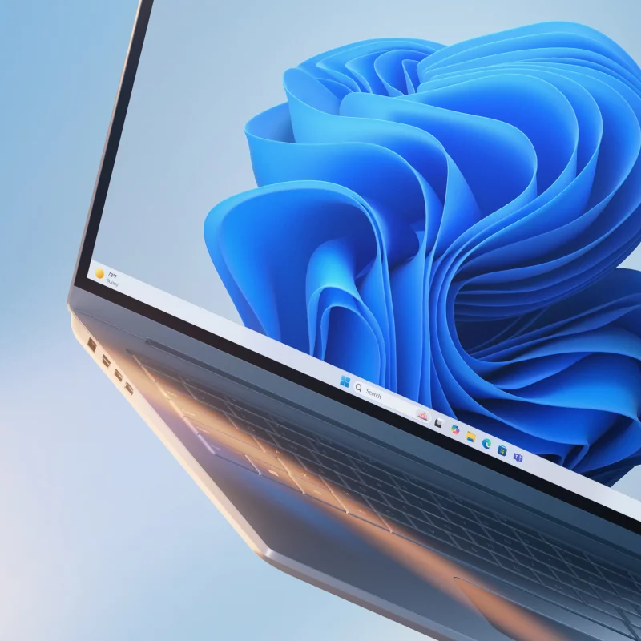
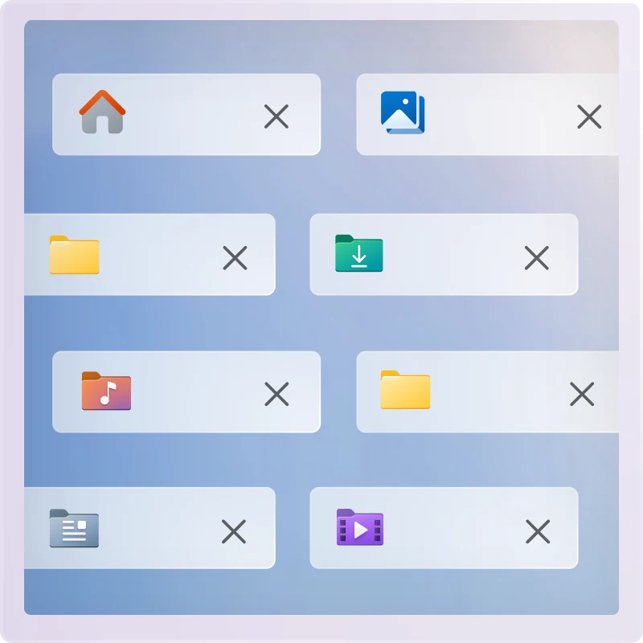

装完 Windows 11 第一次开机？跟着这三步把系统摸顺
新装或重装完 Windows 11，先别急着装软件。从连上 Wi-Fi、固定常用文件夹，到打开两个安全开关，按这个顺序走，十分钟就能把系统调到顺手的状态。
从 windows下载 拿到安装包、装完 windows官网 发布的 Windows 11 第一次坐在桌面前，是不是看着满屏的默认图标有点懵？这篇教程带你从零走一遍首次开机后的三个关键动作——连上 Wi-Fi、把文件管理调顺手、打开两个安全开关。走完这三步，系统就从「能开机」变成「能用」，后面装什么软件都踏实。

先连上网：别让飞行模式坑你
第一步永远是连 Wi-Fi。Windows 11 给了三个入口，最快的是任务栏右下角那堆图标——点一下网络/音量/电池图标叠在一起的区域，弹出的快速设置面板里，Wi-Fi 磁贴旁边有个小箭头，点展开列表，选你家的网络，输密码就行。

连不上的话先看一眼任务栏的网络图标是不是变成了小飞机——飞行模式是「突然断网」的头号原因，装机过程中按错快捷键很容易误开，点一下磁贴关掉就好。
还有一个容易踩的坑：如果之前连过同一个网络、后来密码改了，系统会一直拿着旧密码重连。进设置 > 网络和 Internet > WLAN > 管理已知网络，找到那个网络点「忘记」，再重新输新密码就干净了。
把文件管理调到顺手：固定常用文件夹
联网之后，打开文件资源管理器（Win + E 一键启动）。默认的主页里有快速访问和收藏夹，但空白的。把你常用的文件夹——比如桌面、下载、文档——拖到左侧导航树的「快速访问」上，或者右键文件夹选「固定到快速访问」，下次 Win + E 打开直接就能跳过去。
Windows 11 还有个好用但容易被忽略的改动：资源管理器支持多标签了。Ctrl + T 新建标签、Ctrl + W 关闭、Ctrl + Tab 切换，把不同目录并进一个窗口，Alt + Tab 切换桌面的时候清爽很多。刚装机那几天要频繁翻安装包、下载驱动，多标签能省不少来回点的时间。
右键菜单也有个小变化：默认收窄了，常用的复制、剪切、压缩都在上面，但一些需要第三方工具挂的扩展项被藏起来了。要完整菜单的话，点右下角的「显示更多选项」，或者直接按 Shift + F10。
打开两个安全开关：花不了十秒
最后一步，进 WLAN 设置页，找到你刚连上的那个网络，点进去打开「随机硬件地址」。这个开关让你用随机 MAC 地址连接公共 Wi-Fi，减少被路由器或运营商跟踪的可能，在家用的话开着也没副作用。
如果你用的是手机热点或者流量有限的宽带，再打开「按流量计费的连接」。开启之后 Windows 会暂停自动更新和大文件同步，省下来的流量可能刚好够你把驱动和常用软件装完。这两个开关藏得不算深，但几乎没人主动去开。想了解更多安全与系统设置的细节可以去 windows文档 查。
新手最容易翻的三个车
一是飞行模式误开。装机过程中键盘可能按错，尤其是带 F 功能键的笔记本，Fn + 某个 F 键组合就能切飞行模式，排查断网先看这个。
二是找不到右键的完整菜单。Windows 11 默认的窄菜单把很多人搞懵，记得 Shift + F10 这个快捷键就行，比点「显示更多选项」快。
三是 Wi-Fi 重连循环。密码改过但系统还在拿旧密码连，就会一直转圈。进「管理已知网络」把那条记录删掉重连，别硬等。
往下还能玩什么
首次开机的打底动作做完之后，可以接着看看系统的更新和驱动——Windows 更新会自动拉大部分硬件驱动，但显卡、网卡如果有官方驱动的话还是手动更新一下更稳。另外 Copilot 在 25H2 里已经深度集成了，任务栏上就能调出来，想试试 AI 代操作的话联网之后就能用。考虑到不同平台的访问差异，这套资料在 GitHub、Gitee 和 GitCode 三个仓库都有备份。